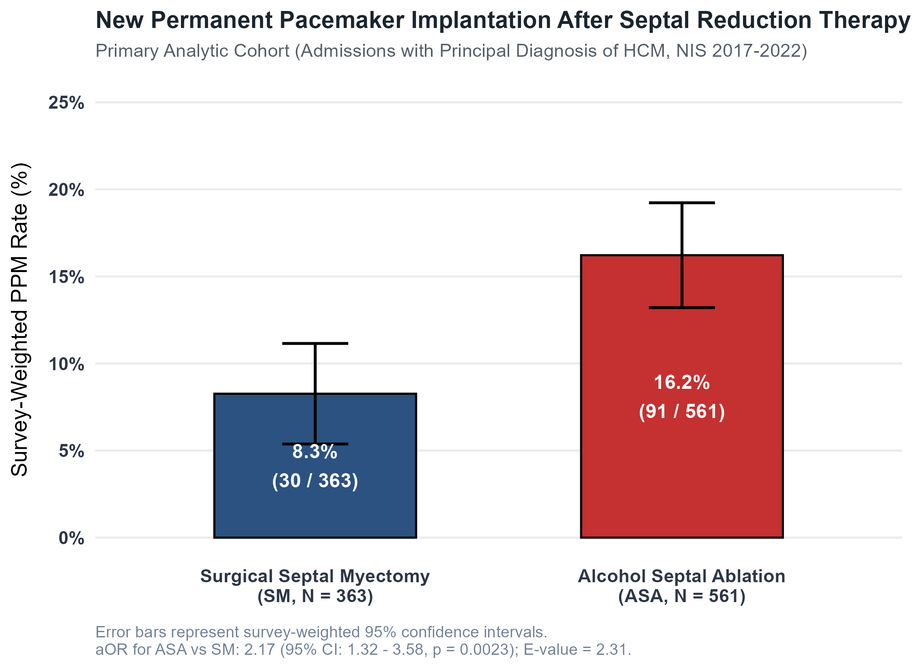
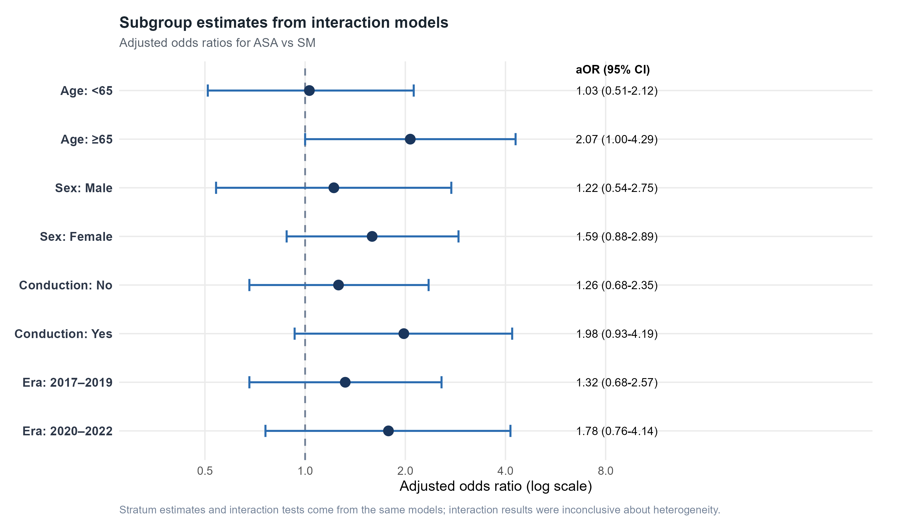

![]()
flowchart TD
A["Total NIS Hospitalizations (2017-2022)<br>N = 41,065,286 (Weighted: 205,326,348)"] --> C["Valid Survey Design and Non-Missing In-Hospital Mortality<br>N = 41,049,761 (Weighted: 205,248,728)"]
C --> D["Adult Age >= 18 Years<br>N = 34,958,953 (Weighted: 174,794,698)"]
D --> E["Hypertrophic Cardiomyopathy (HCM, I42.1 / I42.2 in Any DX)<br>N = 69,978 (Weighted: 349,890)"]
E --> F["Septal Reduction Therapy (ASA or SM in Any PR)<br>N = 1,783 (Weighted: 8,915)"]
F --> H["Exclude: Both ASA and SM in Same Admission, or Pre-Existing Pacemaker / ICD / CRT Device<br>N = 273 excluded → Retained: 1,510 (Weighted: 7,550)"]
H --> I["Exclude: Concomitant Open/Transcatheter Valve or CABG Surgery<br>N = 485 excluded → Retained Any-Position Cohort: 1,025 (Weighted: 5,125)<br>ASA: N = 632 (Wt: 3,160) | SM: N = 393 (Wt: 1,965)"]
I --> J["Principal Diagnosis of HCM (I42.1 / I42.2 in I10_DX1)<br>N = 101 excluded → Primary Analytic Cohort: N = 924 (Weighted: 4,620)"]
J --> K["Alcohol Septal Ablation (ASA)<br>N = 561 (Weighted: 2,805)<br>349 Hospital Clusters"]
J --> L["Surgical Septal Myectomy (SM)<br>N = 363 (Weighted: 1,815)<br>200 Hospital Clusters"]
New Permanent Pacemaker Implantation After Alcohol Septal Ablation vs Surgical Septal Myectomy in Hypertrophic Cardiomyopathy: A Nationwide Analysis, NIS 2017–2022
Healthcare Cost and Utilization Project (HCUP) National Inpatient Sample (NIS) 2017–2022
Preamble
- Study Title: New Permanent Pacemaker Implantation After Alcohol Septal Ablation vs Surgical Septal Myectomy in Hypertrophic Cardiomyopathy: A Nationwide Analysis, NIS 2017–2022.
- Study Objective: To investigate the comparative risk of new permanent pacemaker (PPM) implantation and secondary peri-procedural complications following alcohol septal ablation (ASA) versus surgical septal myectomy (SM) in hospitalized patients with obstructive hypertrophic cardiomyopathy (HCM).
- Data Source: National Inpatient Sample (NIS), Healthcare Cost and Utilization Project (HCUP), Agency for Healthcare Research and Quality (AHRQ), discharge years 2017 through 2022.
- Primary Analytic Cohort: Adult hospitalizations ($$18 years) with a principal discharge diagnosis of HCM (ICD-10-CM
I42.1orI42.2inI10_DX1) who underwent isolated septal reduction therapy (N = 924unweighted, representing4,620survey-weighted admissions: ASA 561 [2,805 weighted] across 349 hospital clusters; SM 363 [1,815 weighted] across 200 hospital clusters). - Secondary Sensitivity Cohort: Any-position HCM diagnosis (
I42.1orI42.2acrossI10_DX1–I10_DX40,N = 1,025unweighted: ASA632[3,160weighted], SM393[1,965weighted]). - Intervention / Exposure: Alcohol septal ablation (ICD-10-PCS
025M3ZZ,025M4ZZ, or historical3E073GC) versus surgical septal myectomy (ICD-10-PCS02BM0ZZor02TM0ZZ). Reference arm: Surgical septal myectomy. - Sequential Exclusions:
- Both ASA and SM in the same hospitalization, or a pre-existing cardiac rhythm device (
Z95.0,Z95.810,Z45.010,Z45.018,Z45.02); combined to avoid reporting a small cell (N = 273). - Concomitant structural cardiac surgery causing independent conduction injury (SAVR, TAVR, MV replacement/repair/restriction, CABG;
N = 485). - HCM not recorded as the principal diagnosis (
N = 101).
- Both ASA and SM in the same hospitalization, or a pre-existing cardiac rhythm device (
- Primary Endpoint: New permanent pacemaker pulse generator (
0JH6[0,3][4,5,6,7,P]Z/0JH8[0,3][4,5,6,7,P]Z, including CRT-P) or leadless intracardiac pacemaker (02HK3NZ) implanted on or after the SRT procedure day (PRDAY_PPM\(\ge\)PRDAY_SRT). Pacing-lead-only insertions without generators and temporary pacing procedures were explicitly excluded from the permanent endpoint. - Secondary Endpoints: Any new permanent device (PPM, leadless PPM, ICD, CRT-D, S-ICD), all-cause in-hospital mortality, complete heart block (
I44.2), sustained ventricular tachycardia/fibrillation/flutter (I47.2,I49.01,I49.02), cardiac tamponade or pericardial drainage (I31.4,0W9930Z,0W993ZZ,0W9D*), stroke/TIA (I63*,I61*,G45*), acute kidney injury (N17*), length of stay (days), inflation-adjusted total hospital costs (2022 USD via HCUP Cost-to-Charge Ratios and CPI-U), and non-home discharge. - Hospital Cluster Note: Septal myectomy is highly concentrated in specialized tertiary referral centers. Year-to-year swings in unweighted SM counts reflect NIS hospital cluster sampling rather than changes in national surgical volume. Accordingly, results report hospital cluster counts (
HOSP_NIS) per arm (349 ASA clusters, 200 SM clusters) rather than temporal surgical trends. - HCUP DUA Compliance: In accordance with the HCUP Data Use Agreement, all unweighted cell frequencies \(\le 10\) and their directly derivable weighted counts are masked to preserve patient confidentiality.
Methods
Data Source
We conducted a retrospective cohort study using the National Inpatient Sample (NIS), Healthcare Cost and Utilization Project (HCUP), sponsored by the Agency for Healthcare Research and Quality (AHRQ), spanning discharge years 2017 through 2022. The NIS is the largest publicly available all-payer inpatient healthcare database in the United States, capturing an approximate 20% stratified sample of discharges from US community hospitals, excluding rehabilitation and long-term acute care facilities. When weighted using discharge weights (DISCWT), the NIS provides statistically valid estimates representing approximately 35 million hospitalizations annually across the United States.
The NIS data structure incorporates hospital-level cluster identifiers (HOSP_NIS) and sampling strata (NIS_STRATUM) to account for the complex survey design. Clinical diagnoses and inpatient procedures are recorded using the International Classification of Diseases, Tenth Revision, Clinical Modification and Procedure Coding System (ICD-10-CM/PCS). Because the NIS consists of de-identified, publicly available administrative data, this study was deemed exempt from institutional review board (IRB) review and informed consent requirements. The investigation conformed strictly to the HCUP Data Use Agreement, including the small-cell suppression policy mandating that unweighted patient counts of 10 or fewer, as well as derivable complementary cells, be suppressed to prevent individual patient re-identification. Study reporting adheres to the Strengthening the Reporting of Observational Studies in Epidemiology (STROBE) and the Reporting of Studies Conducted Using Observational Routinely-Collected Health Data (RECORD) guidelines.
Study Population
The study cohort comprised adult hospitalizations (aged $$18 years) with a principal discharge diagnosis of hypertrophic cardiomyopathy (HCM; ICD-10-CM codes I42.1 [obstructive hypertrophic cardiomyopathy] or I42.2 [other hypertrophic cardiomyopathy]) who underwent septal reduction therapy (SRT) during the index admission.
SRT procedures were categorized into two mutually exclusive treatment strategies: 1. Alcohol Septal Ablation (ASA): Identified by ICD-10-PCS codes 025M3ZZ (destruction of ventricular septum, percutaneous approach) and 025M4ZZ (destruction of ventricular septum, percutaneous endoscopic approach). In 2017–2018, ASA was frequently coded as 3E073GC (introduction of other therapeutic substance into coronary artery, percutaneous) in admissions with a principal diagnosis of HCM; this code was absent among HCM admissions from 2019 onward, when 025M3ZZ predominated. Both codes were therefore used to define ASA. 2. Surgical Septal Myectomy (SM): Identified by ICD-10-PCS codes 02BM0ZZ (excision of ventricular septum, open approach) and 02TM0ZZ (resection of ventricular septum, open approach).
To ensure an unconfounded assessment of post-procedural conduction injury attributable specifically to isolated SRT, we applied the following sequential exclusion criteria: 1. Concurrent ASA and SM: Patients receiving both ASA and SM during the same hospitalization were excluded to avoid crossover ambiguity. 2. Pre-existing cardiac rhythm devices: Patients with a pre-existing permanent pacemaker, implantable cardioverter-defibrillator (ICD), or cardiac resynchronization therapy (CRT) device were excluded using secondary ICD-10-CM diagnosis codes (Z95.0, Z95.810, Z45.010, Z45.018, and Z45.02). Nonspecific codes (Z95.818, Z45.09) were excluded from the definition. 3. Concomitant cardiac surgery: Admissions involving concomitant open or transcatheter structural cardiac procedures associated with an independent, established risk of atrioventricular or bundle branch conduction injury were excluded. These encompassed surgical aortic valve replacement or repair (SAVR; 02RF0, 02QF0), transcatheter aortic valve replacement (TAVR; 02RF3, 02RF4), mitral valve replacement, repair, or restriction (02RG, 02QG, 02VG), and coronary artery bypass graft surgery (CABG; 0210, 0211, 0212, 0213).
Patients in the primary analytic cohort were treated across 549 distinct hospital clusters (ASA 349 clusters, SM 200 clusters). Septal myectomy is a specialized surgical procedure concentrated in high-volume tertiary centers; year-to-year counts of surgical myectomy in the NIS reflect hospital cluster sampling rather than changes in national surgical practice.
Study Outcomes
The primary outcome was new permanent pacemaker (PPM) implantation performed on or after the day of the index SRT procedure (PPM_Post_SRT). New permanent pacemaker implantation was defined using ICD-10-PCS procedure codes for pulse generator insertion into the subcutaneous tissue of the chest or abdomen (single-chamber, single-chamber rate-responsive, dual-chamber, cardiac resynchronization therapy pacemaker [CRT-P], or cardiac rhythm related device; 0JH604Z–0JH607Z, 0JH60PZ, 0JH634Z–0JH637Z, 0JH63PZ, 0JH804Z–0JH807Z, 0JH80PZ, 0JH834Z–0JH837Z, 0JH83PZ) or leadless intracardiac pacemaker insertion into the right ventricle (02HK3NZ). In ICD-10-PCS Table 0JH, character 6 indicates dual chamber (not multiple array) and character 7 indicates CRT-P, which represents a permanent pacemaker rather than an ICD. Relative procedural timing was established using the procedure day variable (PRDAY), requiring that the day of PPM implantation occurred on or after the day of the index SRT (PRDAY_PPM \(\ge\) PRDAY_SRT).
Importantly, pacing-lead-only codes (such as 02HK3JZ, 02H63JZ, 02HK0JZ, 02H60JZ, and related transvenous/epicardial lead insertion codes) and temporary pacing procedure codes (5A1213Z, 5A1223Z; excluding 5A1221Z which denotes cardiopulmonary bypass) were not counted as permanent pacemakers. These codes capture temporary transvenous pacing catheters, prophylactic intraoperative epicardial wires placed during sternotomy, or bedside temporary pacing, which are routine peri-procedural adjuncts rather than definitive permanent pacemakers. Erroneous inclusion of lead-only codes in administrative studies represents a well-recognized source of false-positive outcome misclassification.
Secondary outcomes included: 1. Any new permanent cardiac device: Implantation of any permanent pulse generator on or after the SRT procedure day, including permanent pacemakers, leadless pacemakers, transvenous ICDs and CRT-D devices (0JH608Z, 0JH609Z, 0JH638Z, 0JH639Z, 0JH808Z, 0JH809Z, 0JH838Z, 0JH839Z), and subcutaneous ICDs (S-ICD generator with subcutaneous lead 0JH60FZ, 0JH63FZ). 2. In-hospital mortality: All-cause in-hospital death (DIED). 3. Complete heart block: Complete (third-degree) atrioventricular block (ICD-10-CM code I44.2) recorded in any diagnosis position. 4. Cardiac tamponade or pericardial drainage: Defined as a diagnosis of cardiac tamponade (I31.4) or an inpatient pericardial drainage procedure (0W9930Z, 0W993ZZ, or 0W9D*). Pericardial effusion or hemopericardium diagnoses alone (I31.2, I31.3) without documented tamponade or procedural drainage were not counted. 5. Ventricular arrhythmias: Ventricular tachycardia, ventricular fibrillation, or ventricular flutter (I47.2, I49.01, I49.02) recorded in any diagnosis position. 6. Acute ischemic or hemorrhagic stroke / TIA: Acute ischemic stroke (I63*), nontraumatic intracerebral hemorrhage (I61*), or transient ischemic attack (G45*) recorded in any diagnosis position. 7. Acute kidney injury (AKI): Acute kidney failure (N17*) recorded in any diagnosis position. 8. Post-procedural length of stay (LOS): Total duration of hospitalization in days. 9. Inflation-adjusted total hospital costs: Derived by multiplying total hospital charges (TOTCHG) by hospital-specific Cost-to-Charge Ratios (CCRs) supplied annually by HCUP, inflation-adjusted to 2022 US dollars using the medical care component of the US Consumer Price Index (CPI). 10. Non-home discharge: Discharge destination other than routine home discharge (e.g., skilled nursing facility, intermediate care, acute inpatient rehabilitation, or home health care; DISPUNIFORM \(\ne\) 1). In-hospital deaths remain in this denominator when DISPUNIFORM is not 1.
Covariates
We adjusted for a comprehensive panel of potential confounders, comprising: - Patient demographics: Age (continuous and categorized as <65 vs. $$65 years), sex (female vs. male), race/ethnicity (White, Black, Hispanic, Asian or Pacific Islander, Native American, other/unknown), primary expected insurance payer (Medicare, Medicaid, Private, Self-pay/uninsured, other), and median household income quartile based on the patient’s ZIP code (ZIPINC_QRTL). - Hospital organizational characteristics: Hospital bed size (small, medium, large), hospital geographic location and teaching status (rural, urban non-teaching, urban teaching), and US census hospital region (Northeast, Midwest, South, West). - Admission characteristics: Admission type (elective vs. non-elective) and calendar year of admission (2017–2022). - Baseline cardiac conduction abnormalities: Pre-existing right bundle branch block (RBBB; I45.0, I45.10, I45.19), left bundle branch block (LBBB; I44.7), first- or second-degree atrioventricular block (I44.0, I44.1), bifascicular block (I45.2), trifascicular block (I45.3), and any baseline conduction disease. - Clinical comorbidities: Atrial fibrillation or flutter (I48), essential or secondary hypertension (I10–I13, I15), diabetes mellitus (E08–E11, E13), chronic kidney disease (N18), coronary artery disease (I25), heart failure (I50, I11.0, I13.0, I13.2), obesity (E66, Z68.3, Z68.4), and overall comorbidity burden quantified using the Elixhauser Comorbidity Index (elixsum).
Statistical Analysis
All statistical analyses accounted for the complex survey design of the NIS, incorporating discharge sampling weights (DISCWT), hospital-level cluster sampling (HOSP_NIS), and geographic/hospital-type stratification (NIS_STRATUM) using Taylor series linearization to obtain design-unbiased national estimates and appropriate standard errors.
Baseline patient and hospital characteristics were compared between the ASA and SM cohorts. Continuous variables were expressed as survey-weighted means with standard deviations or medians with interquartile ranges, and categorical variables were expressed as survey-weighted frequencies and percentages. Baseline covariate balance was evaluated using standardized mean differences (SMDs), with an SMD > 0.10 designated a priori as indicating clinically meaningful imbalance.
The independent association between SRT modality (SM vs. ASA) and the primary outcome (new PPM post-SRT) was evaluated using survey-weighted multivariable logistic regression. The primary multivariable model adjusted for 11 prespecified covariate variables (13 parameter degrees of freedom plus treatment: age, female sex, baseline conduction abnormalities, elective admission status, atrial fibrillation/flutter, heart failure, diabetes mellitus, chronic kidney disease, hospital bed size, Elixhauser comorbidity index, and calendar year). With 121 permanent pacemaker events observed in the primary cohort, this yielded an events-per-variable (EPV) ratio of 121 / 14 = 8.6 (and 121 / 11 = 11.0 events per covariate variable), well within established guidelines for multivariable modeling stability. Adjusted odds ratios (aORs) with 95% confidence intervals (CIs) were generated. Similar survey-weighted multivariable generalized linear models were constructed for secondary outcomes.
As a prespecified secondary methodology, stabilized inverse probability of treatment weights targeting the average treatment effect (ATE) were estimated using a logistic propensity model with 21 baseline covariates: age, sex, race/ethnicity, primary expected payer, ZIP income quartile, hospital region, bed size, teaching status, elective admission, year, baseline RBBB, LBBB, first/second-degree AV block, bifascicular block, atrial fibrillation/flutter, hypertension, diabetes, chronic kidney disease, coronary artery disease, heart failure, and obesity. Stabilized ATE propensity weights were multiplied by survey discharge weights (IPTW \(\times\) DISCWT) in a survey design retaining HOSP_NIS clusters and NIS_STRATUM strata. No trimming was applied to this prespecified analysis. Post-weighting balance was assessed using standardized mean differences (SMDs), and effective sample sizes (ESS) were calculated from the composite weights.
Two additional propensity-weight analyses were conducted post hoc because the ATE analysis showed extreme weights and limited covariate overlap. First, overlap weights targeting the average treatment effect in the overlap population (ATO) were estimated using WeightIt’s generalized linear model method and the same 21 covariates. These overlap weights were multiplied by DISCWT and analyzed with the same cluster, strata, and lonely-PSU settings. Second, the stabilized ATE weights were winsorized at their pooled 1st and 99th percentiles before multiplication by DISCWT; this was a truncation sensitivity check, not a replacement for the prespecified ATE estimate. For both analyses we report the survey-weighted treatment association, covariate balance, and ESS. Empirical common support was defined as the intersection of the observed propensity-score ranges in the two treatment groups; the proportion outside that interval was summarized by arm. Propensity-score distributions and common-support limits are shown in a supplementary figure. These post hoc analyses are exploratory.
To evaluate the potential impact of unmeasured confounding on the primary outcome, we calculated the E-value for the point estimate and the limit of the 95% confidence interval closest to the null. The E-value quantifies the minimum strength of association, on the risk ratio scale, that an unmeasured confounder would need to have with both the treatment choice and PPM implantation, above and beyond the measured covariates, to fully explain away the observed association.
Prespecified subgroup analyses were conducted across clinically relevant strata: 1. Age (<65 vs. $$65 years); 2. Sex (female vs. male); 3. Baseline conduction disease (present vs. absent); 4. Calendar era (2017–2019 vs. 2020–2022). Heterogeneity of treatment effect across subgroups was assessed by including interaction terms (treatment modality \(\times\) subgroup) in the survey-weighted multivariable models, with interaction significance tested via survey-weighted Wald tests. In accordance with clinical trial reporting principles, interaction p-values were evaluated before interpreting subgroup-specific estimates; when interaction terms were non-significant, findings were interpreted as showing consistent relative effects across strata rather than true effect modification.
Prespecified sensitivity analyses were performed to evaluate the robustness of the primary findings: 1. Diagnosis position: Expanding the cohort to include patients with HCM recorded in any diagnostic position (ICD-10-CM I42.1 or I42.2 in I10_DX1–I10_DX40); 2. Concomitant mitral valve surgery: Retaining surgical myectomy admissions with concomitant mitral valve repair or replacement (02RG, 02QG, 02VG), which represents a common surgical adjunct in severe systolic anterior motion; 3. Timing threshold: Defining new PPM implantation on any hospital day (PPM_Any_Day), relaxing the procedure-day requirement; 4. Expanded device outcome: Assessing the composite endpoint of any new permanent cardiac device (PPM, ICD, CRT-D, or S-ICD).
Continuous skewed healthcare resource outcomes (post-procedural length of stay and inflation-adjusted hospital costs) were analyzed using survey-weighted generalized linear models (GLMs) with a gamma distribution and a log-link function. All statistical hypothesis tests were two-sided, with an alpha level of 0.05 establishing statistical significance. All analyses were conducted in R (version 4.6.1, R Foundation for Statistical Computing, Vienna, Austria), utilizing survey (v4.4-2) for complex survey modeling, gtsummary (v2.0.4) for reproducible publication tables, WeightIt (v1.3.1) and cobalt (v4.5.5) for inverse probability of treatment weighting and balance diagnostics, EValue (v4.1.4) for sensitivity to unmeasured confounding, easyNIS (v0.2.1) for database queries and cell suppression, and arrow (v19.0.0) for Apache Arrow-accelerated parquet processing.
Abstract
Background: Alcohol septal ablation (ASA) and surgical septal myectomy (SM) are established septal reduction therapies for hypertrophic cardiomyopathy, but their association with new permanent pacemaker (PPM) implantation may differ. Methods: We analyzed 924 adult NIS admissions with principal-diagnosis HCM and isolated ASA or SM from 2017–2022, using survey-weighted multivariable regression and prespecified sensitivity analyses. Propensity-score analyses used 21 baseline covariates; overlap weighting and 1st/99th-percentile ATE-weight truncation were post hoc checks prompted by extreme ATE weights. Results: New post-SRT PPM occurred in 91 of 561 ASA admissions (16.2%) and 30 of 363 SM admissions (8.3%). ASA was associated with higher adjusted odds in the primary model (aOR 2.17, 95% CI 1.32–3.58; p=0.0023) and all four prespecified sensitivity analyses. The prespecified stabilized ATE-IPTW estimate was attenuated and imprecise (aOR 1.19, 95% CI 0.53–2.69; p=0.6714), amid limited covariate overlap, particularly for age. Post hoc overlap weighting gave an aOR of 1.52 (95% CI 0.88–2.64; p=0.1366). Conclusions: ASA was associated with higher PPM odds, while the attenuated, wide-interval ATE-IPTW result and limited overlap mean residual confounding by age and treatment selection cannot be excluded. Overlap-weighted and truncated-weight estimates are post hoc and should be interpreted as exploratory. Secondary outcome differences are associations and should not be interpreted causally.
Key Findings
- The crude survey-weighted post-SRT PPM rates were 16.2% with ASA and 8.3% with SM; the multivariable association was aOR 2.17 (95% CI 1.32–3.58).
- The prespecified ATE-IPTW estimate was attenuated (aOR 1.19, 95% CI 0.53–2.69) with limited overlap. Post hoc overlap weighting yielded aOR 1.52 (95% CI 0.88–2.64).
- ASA was also associated with shorter length of stay, lower hospital costs, less AKI, and less non-home discharge. These are secondary observational associations; all prespecified subgroup interactions were non-significant.
Study Flow and Attrition (CONSORT Flowchart)
Table S1. Sequential Attrition Across Cohort Definition Steps
| Step | Description | Discharges (Unweighted) | National Estimate (Weighted) | Excluded (Unweighted) | Excluded (Weighted) |
|---|---|---|---|---|---|
| 0 | Total NIS Hospitalizations | 41,065,286 | 205,326,348 | - | - |
| 1 | Valid survey design and mortality (DIED) | 41,049,761 | 205,248,728 | 15,525 | 77,620 |
| 2 | Adult age (>= 18 years) | 34,958,953 | 174,794,698 | 6,090,808 | 30,454,030 |
| 3 | Hypertrophic cardiomyopathy (I42.1 or I42.2 in any DX) | 69,978 | 349,890 | 34,888,975 | 174,444,808 |
| 4 | Septal reduction therapy (ASA: 025M3ZZ, 025M4ZZ, 3E073GC; SM: 02BM0ZZ, 02TM0ZZ in any PR) | 1,783 | 8,915 | 68,195 | 340,975 |
| 5 | Exclusion: Both ASA and SM in same admission, or pre-existing pacemaker / ICD / CRT (Z95.0, Z95810, Z45010, Z45018, Z4502) | 1,510 | 7,550 | 273 | 1,365 |
| 6 | Exclusion: Concomitant conduction-injury surgery (SAVR/AV repair, MV surgery, CABG, TAVR) -> Sensitivity Cohort: Any-Position HCM | 1,025 | 5,125 | 485 | 2,425 |
| 7 | Exclusion: Non-principal HCM (I10_DX1 not I42.1/I42.2) -> Primary Analytic Cohort | 924 | 4,620 | 101 | 505 |
Table 1: Baseline Characteristics (ASA vs SM)
| Baseline Characteristic | Overall Primary Cohort N = 924 (Wt: 4,620)1 |
SM (Reference) N = 363 (Wt: 1,815)1 |
ASA N = 561 (Wt: 2,805)1 |
p-value2 |
|---|---|---|---|---|
| Age, years | 63.3 (13.6) | 56.1 (13.3) | 68.0 (11.6) | <0.001 |
| Female Sex | 0.007 | |||
| Male | 321 (34.7%) | 149 (41.0%) | 172 (30.7%) | |
| Female | 603 (65.3%) | 214 (59.0%) | 389 (69.3%) | |
| Race/Ethnicity | <0.001 | |||
| White | 711 (76.9%) | 267 (73.6%) | 444 (79.1%) | |
| Asian or Pacific Islander | ≤10 | ≤10 | ≤10 | |
| Black | 76 (8.2%) | 22 (6.1%) | 54 (9.6%) | |
| Hispanic | 39 (4.2%) | 15 (4.1%) | 24 (4.3%) | |
| Missing/Other | 67 (7.3%) | 47 (12.9%) | 20 (3.6%) | |
| Native American | ≤10 | 0 (0.0%) | ≤10 | |
| Other | ≤10 | ≤10 | ≤10 | |
| Primary Expected Payer | <0.001 | |||
| Medicare | 468 (50.6%) | 112 (30.9%) | 356 (63.5%) | |
| Medicaid | 67 (7.3%) | 38 (10.5%) | 29 (5.2%) | |
| Other | ≤10 | ≤10 | ≤10 | |
| Private | 353 (38.2%) | 198 (54.5%) | 155 (27.6%) | |
| Self-pay / Uninsured | ≤10 | ≤10 | ≤10 | |
| Median Household Income Quartile | 0.10 | |||
| Q1 (Lowest) | ≤10 | 81 (22.3%) | ≤10 | |
| Missing | ≤10 | ≤10 | ≤10 | |
| Q2 | ≤10 | ≤10 | 145 (25.8%) | |
| Q3 | 223 (24.1%) | 87 (24.0%) | 136 (24.2%) | |
| Q4 (Highest) | 256 (27.7%) | 106 (29.2%) | 150 (26.7%) | |
| Hospital Region | 0.002 | |||
| Northeast | 242 (26.2%) | 86 (23.7%) | 156 (27.8%) | |
| Midwest | 264 (28.6%) | 147 (40.5%) | 117 (20.9%) | |
| South | 277 (30.0%) | 85 (23.4%) | 192 (34.2%) | |
| West | 141 (15.3%) | 45 (12.4%) | 96 (17.1%) | |
| Hospital Bed Size | 0.2 | |||
| Large | 706 (76.4%) | 282 (77.7%) | 424 (75.6%) | |
| Medium | 162 (17.5%) | 68 (18.7%) | 94 (16.8%) | |
| Small | 56 (6.1%) | 13 (3.6%) | 43 (7.7%) | |
| Hospital Location and Teaching Status | 0.13 | |||
| Urban teaching | 885 (95.8%) | 353 (97.2%) | 532 (94.8%) | |
| Rural | ≤10 | ≤10 | ≤10 | |
| Urban non-teaching | ≤10 | ≤10 | ≤10 | |
| Elective Admission | 0.032 | |||
| Elective | 797 (86.3%) | 328 (90.4%) | 469 (83.6%) | |
| Non-elective | ≤10 | ≤10 | ≤10 | |
| Unknown | ≤10 | ≤10 | ≤10 | |
| Right Bundle Branch Block (RBBB) | ≤10 | ≤10 | 117 (20.9%) | <0.001 |
| Left Bundle Branch Block (LBBB) | 142 (15.4%) | 93 (25.6%) | 49 (8.7%) | <0.001 |
| 1st or 2nd Degree AV Block | 57 (6.2%) | 17 (4.7%) | 40 (7.1%) | 0.14 |
| Bifascicular Block | ≤10 | ≤10 | 30 (5.3%) | <0.001 |
| Any Baseline Conduction Disease | 307 (33.2%) | 105 (28.9%) | 202 (36.0%) | 0.049 |
| Atrial Fibrillation / Flutter | 276 (29.9%) | 147 (40.5%) | 129 (23.0%) | <0.001 |
| Hypertension | 729 (78.9%) | 262 (72.2%) | 467 (83.2%) | <0.001 |
| Diabetes Mellitus | 188 (20.3%) | 67 (18.5%) | 121 (21.6%) | 0.2 |
| Chronic Kidney Disease | 139 (15.0%) | 38 (10.5%) | 101 (18.0%) | 0.001 |
| Coronary Artery Disease | 346 (37.4%) | 93 (25.6%) | 253 (45.1%) | <0.001 |
| Heart Failure | 372 (40.3%) | 147 (40.5%) | 225 (40.1%) | >0.9 |
| Obesity | 288 (31.2%) | 146 (40.2%) | 142 (25.3%) | <0.001 |
| Elixhauser Comorbidity Index | 4.3 (2.0) | 4.7 (2.0) | 4.0 (2.0) | <0.001 |
| 1 Cells based on ≤10 unweighted discharges and derived/complementary cells are masked (≤10) per the HCUP Data Use Agreement to prevent individual identification. | ||||
| 2 Design-based KruskalWallis test; Pearson’s X^2: Rao & Scott adjustment | ||||
Table 2: Clinical Outcomes (Univariable Analysis)
| Clinical Outcome | Overall Primary Cohort N = 924 (Wt: 4,620)1 |
SM (Reference) N = 363 (Wt: 1,815)1 |
ASA N = 561 (Wt: 2,805)1 |
p-value2 |
|---|---|---|---|---|
| New Permanent Pacemaker (Post-SRT Day, Primary) | 121 (13.1%) | 30 (8.3%) | 91 (16.2%) | <0.001 |
| New Permanent Device: PPM or ICD/CRT-D (Post-SRT Day) | 197 (21.3%) | 65 (17.9%) | 132 (23.5%) | 0.068 |
| Temporary Pacing Only (No Generator) | 328 (35.5%) | 61 (16.8%) | 267 (47.6%) | <0.001 |
| Pacing Lead Insertion Without Generator (False Positives) | 115 (12.4%) | 39 (10.7%) | 76 (13.5%) | 0.2 |
| In-Hospital Mortality | ≤10 | ≤10 | ≤10 | 0.3 |
| Complete Heart Block (I44.2) | 204 (22.1%) | 51 (14.0%) | 153 (27.3%) | <0.001 |
| Cardiac Tamponade / Pericardial Drainage | ≤10 | 12 (3.3%) | ≤10 | 0.065 |
| Ventricular Tachycardia / Fibrillation / Flutter | 97 (10.5%) | 38 (10.5%) | 59 (10.5%) | >0.9 |
| Stroke / TIA (I63*, I61*, G45*) | ≤10 | ≤10 | ≤10 | 0.6 |
| Acute Kidney Injury (N17*) | 64 (6.9%) | 39 (10.7%) | 25 (4.5%) | <0.001 |
| Length of Stay, days | 5.0 (5.4) | 7.4 (7.2) | 3.4 (2.9) | <0.001 |
| Hospital Costs, Inflation-Adjusted 2022 USD | 35,841.3 (30,330.9) | 51,888.4 (37,936.6) | 25,402.0 (17,526.4) | <0.001 |
| Total Hospital Charges, USD | 127,710.8 (127,772.0) | 179,241.1 (149,174.7) | 94,188.4 (98,216.1) | <0.001 |
| Non-Home Discharge | 246 (26.6%) | 163 (44.9%) | 83 (14.8%) | <0.001 |
| 1 Cells based on ≤10 unweighted discharges and derived/complementary cells are masked (≤10) per the HCUP Data Use Agreement to prevent individual identification. | ||||
| 2 Pearson’s X^2: Rao & Scott adjustment; Design-based t-test | ||||
Primary Multivariable Model: Permanent Pacemaker Implantation
The primary outcome was new permanent pacemaker (PPM) generator or leadless pacemaker implantation occurring on or after the SRT procedure day (PPM_Post_SRT).
To avoid model overfitting given 121 total observed PPM events (EPV rule of thumb \(\ge\) 10 events per degree of freedom), the multivariable survey-weighted logistic regression model prespecified 13 covariate degrees of freedom (14 total model degrees of freedom including treatment) adjusting for major demographic, anatomical conduction, comorbidity, and hospital factors: age, female sex, baseline conduction disease, elective admission, atrial fibrillation, heart failure, diabetes mellitus, chronic kidney disease, hospital bed size, Elixhauser comorbidity score, and calendar year (effective EPV = 8.6).
| Covariate | Adjusted OR (aOR) | 95% CI | 95% CI | P Value |
|---|---|---|---|---|
| Septal Reduction Modality | ||||
| SM | — | — | — | |
| ASA | 2.17 | 1.32, 3.58 | 1.32, 3.58 | 0.002 |
| Age, per year | 1.02 | 1.00, 1.04 | 1.00, 1.04 | 0.032 |
| Female Sex | ||||
| Male | — | — | — | |
| Female | 1.49 | 0.90, 2.45 | 0.90, 2.45 | 0.12 |
| Baseline Conduction Disease | ||||
| No | — | — | — | |
| Yes | 1.48 | 1.00, 2.21 | 1.00, 2.21 | 0.052 |
| Elective Admission | ||||
| Elective | — | — | — | |
| Non-elective | 0.68 | 0.33, 1.40 | 0.33, 1.40 | 0.3 |
| Unknown | 1.79 | 0.08, 39.1 | 0.08, 39.1 | 0.7 |
| Atrial Fibrillation / Flutter | ||||
| No | — | — | — | |
| Yes | 0.83 | 0.50, 1.40 | 0.50, 1.40 | 0.5 |
| Heart Failure | ||||
| No | — | — | — | |
| Yes | 0.55 | 0.35, 0.88 | 0.35, 0.88 | 0.012 |
| Diabetes Mellitus | ||||
| No | — | — | — | |
| Yes | 0.68 | 0.42, 1.11 | 0.42, 1.11 | 0.12 |
| Chronic Kidney Disease | ||||
| No | — | — | — | |
| Yes | 0.72 | 0.40, 1.32 | 0.40, 1.32 | 0.3 |
| Hospital Bed Size | ||||
| Large | — | — | — | |
| Medium | 0.93 | 0.56, 1.54 | 0.56, 1.54 | 0.8 |
| Small | 0.83 | 0.34, 2.01 | 0.34, 2.01 | 0.7 |
| Elixhauser Comorbidity Index | 1.42 | 1.25, 1.61 | 1.25, 1.61 | <0.001 |
| Calendar Year | 0.99 | 0.87, 1.12 | 0.87, 1.12 | 0.8 |
| Abbreviations: CI = Confidence Interval, OR = Odds Ratio | ||||
Primary Effect Estimate and Robustness (E-Value)
- Adjusted Odds Ratio (aOR) for ASA vs SM: 2.17 (95% CI: 1.32 – 3.58, p = 0.0023)
- E-value for Point Estimate: 2.31
- E-value for 95% Confidence Interval Lower Bound: 1.56
Interpretation: ASA was associated with higher adjusted odds of post-SRT PPM (16.2% vs 8.3%; aOR 2.17, 95% CI 1.32–3.58; p=0.0023). This observational association does not establish a causal effect.

Secondary Propensity Score & IPTW Analysis
The prespecified stabilized inverse probability of treatment weighting (IPTW) analysis combined propensity weights with survey sampling weights (DISCWT). Propensity scores for ASA versus SM used the same 21 baseline demographic, hospital, conduction, and comorbidity covariates. The ATE-IPTW estimate is reported as prespecified, including its wide uncertainty.
| Model / Exposure | IPTW aOR | 95% CI | 95% CI | P Value |
|---|---|---|---|---|
| Treatment Arm (ASA vs SM) | ||||
| SM | — | — | — | |
| ASA | 1.19 | 0.53, 2.69 | 0.53, 2.69 | 0.7 |
| Abbreviations: CI = Confidence Interval, OR = Odds Ratio | ||||
- IPTW aOR for ASA vs SM: 1.19 (95% CI: 0.53 – 2.69, p = 0.6714)

Covariate Balance and Overlap: Maximum adjusted SMD was 0.086, but the ATE weights reached 27.8; effective sample sizes were 114 (SM) and 153 (ASA). Age imbalance was substantial before weighting, and limited overlap constrains interpretation of this estimate.
Post Hoc Propensity-Weight Sensitivity Analyses
Motivated by the extreme stabilized ATE weights and limited overlap, we conducted two post hoc checks. First, overlap weights (ATO) used the same 21 covariates and were multiplied by DISCWT in the survey design. This yielded an aOR of 1.52 (95% CI 0.88–2.64; p=0.1366), a maximum absolute adjusted SMD of 0.005, and effective sample sizes of 232 (SM) and 275 (ASA). Second, the stabilized ATE weights were truncated at their pooled 1st and 99th percentiles (0.398 and 7.084); the resulting aOR was 1.35 (95% CI 0.66–2.74; p=0.4117), with maximum adjusted SMD 0.182 and ESS 155 (SM) and 322 (ASA). These post hoc estimates are exploratory.

The empirical common-support interval was 0.022–0.977. Outside this interval were 3.9% of SM and 16.0% of ASA admissions in the complete-case propensity-score cohort.
Subgroup Analyses
We conducted prespecified subgroup analyses across key demographic and clinical strata: 1. Age: Younger (<65 years) versus Older ($$65 years) 2. Sex: Female versus Male 3. Baseline Cardiac Conduction Disease: Present versus Absent 4. Study Era: 2017–2019 versus 2020–2022
| Subgroup | Stratum | ASA Events / N (%) | SM Events / N (%) | Adjusted OR (95% CI) | P Value | P for Interaction |
|---|---|---|---|---|---|---|
| Age (<65 vs >=65) | <65 years | 18 / 194 (9.3%) | Suppressed / 263 (Suppressed) | 1.69 (0.85 – 3.34) | 0.1340 | 0.0913 |
| Age (<65 vs >=65) | >=65 years | 73 / 367 (19.9%) | <=10 / 100 (Suppressed) | 3.41 (1.76 – 6.59) | 0.0003 | 0.0913 |
| Sex (Female vs Male) | Male | 17 / 172 (9.9%) | <=10 / 149 (Suppressed) | 1.21 (0.50 – 2.91) | 0.6748 | 0.5902 |
| Sex (Female vs Male) | Female | 74 / 389 (19.0%) | Suppressed / 214 (Suppressed) | 2.63 (1.47 – 4.73) | 0.0013 | 0.5902 |
| Baseline Conduction (Yes vs No) | No | 48 / 359 (13.4%) | Suppressed / 258 (Suppressed) | 2.11 (1.15 – 3.88) | 0.0158 | 0.3630 |
| Baseline Conduction (Yes vs No) | Yes | 43 / 202 (21.3%) | <=10 / 105 (Suppressed) | 2.43 (1.08 – 5.48) | 0.0321 | 0.3630 |
| Time Period (2017-2019 vs 2020-2022) | 2017-2019 | 35 / 266 (13.2%) | Suppressed / 261 (Suppressed) | 1.97 (1.02 – 3.80) | 0.0426 | 0.3032 |
| Time Period (2017-2019 vs 2020-2022) | 2020-2022 | 56 / 295 (19.0%) | <=10 / 102 (Suppressed) | 2.85 (1.23 – 6.65) | 0.0154 | 0.3032 |
Subgroup Interaction Note: All prespecified interaction tests were non-significant; the analyses did not provide evidence of effect modification by age, sex, baseline conduction disease, or study era.

Sensitivity Analyses
We evaluated four prespecified sensitivity analyses to assess the robustness of our primary findings: 1. Any-Position HCM Cohort: Relaxing the primary inclusion from principal diagnosis to any-position HCM diagnosis (ASA = 632, SM = 393). 2. SM + Concomitant Mitral Valve Surgery Added Back: Retaining surgical myectomy admissions involving concomitant MV repair or replacement (SM = 552, ASA = 561). 3. Any-Day PPM Timing: Counting all PPM procedures during the index admission regardless of documented procedure day (PPM_Any_Day). 4. Any Permanent Cardiac Device: Expanding the outcome to include any permanent pulse generator (PPM, leadless PPM, transvenous ICD, CRT-D, or subcutaneous ICD).
| Sensitivity Analysis | ASA (N) | SM (N) | Adjusted OR (95% CI) | P Value |
|---|---|---|---|---|
| Any-Position HCM Cohort | 632 | 393 | 1.92 (1.21 – 3.05) | 0.0060 |
| SM + Concomitant MV Surgery Added Back | 561 | 552 | 1.97 (1.29 – 3.02) | 0.0019 |
| Any-Day PPM Timing (PPM_Any_Day) | 561 | 363 | 2.13 (1.30 – 3.49) | 0.0027 |
| Any Permanent Device (PPM or ICD/CRT-D/S-ICD) | 561 | 363 | 1.64 (1.05 – 2.55) | 0.0283 |
Secondary Clinical and Economic Outcomes
Multivariable survey-weighted regression models were constructed for secondary binary outcomes with adequate event counts ($$10 events per arm) and continuous resource utilization measures (Length of Stay and Inflation-Adjusted Total Hospital Costs in 2022 USD using Gamma log-link GLM models).
| Clinical / Economic Outcome | Model Specification | Effect Metric | Adjusted Estimate (95% CI) | P Value |
|---|---|---|---|---|
| Complete Heart Block (I44.2) | Binary Logistic | aOR | 2.88 (1.84 – 4.50) | 0.0000 |
| Acute Kidney Injury (N17*) | Binary Logistic | aOR | 0.36 (0.19 – 0.70) | 0.0028 |
| Non-Home Discharge (DISPUNIFORM != 1) | Binary Logistic | aOR | 0.14 (0.09 – 0.21) | 0.0000 |
| Length of Stay (days) | Gamma GLM (log-link) | Exp(Beta) Ratio | 0.45 (0.39 – 0.53) | 0.0000 |
| Hospital Costs (2022 USD) | Gamma GLM (log-link) | Exp(Beta) Ratio | 0.52 (0.45 – 0.59) | 0.0000 |
Resource Utilization Summary: ASA was associated with shorter hospitalization and lower inflation-adjusted hospital costs. It was also associated with lower AKI and non-home discharge. These secondary findings are observational associations and do not establish treatment effects.
Key Results Summary Table
| Analysis | ASA N | SM N | ASA PPM (%) | SM PPM (%) | Adjusted OR (95% CI) | P Value | E-Value (Point, CI) | ASA Clusters | SM Clusters |
|---|---|---|---|---|---|---|---|---|---|
| Primary Model: Post-SRT PPM (Multivariable Logistic) | 561 | 363 | 16.2 | 8.3 | 2.17 (1.32 – 3.58) | 0.0023 | 2.31 (CI: 1.56) | 349 | 200 |
| Secondary Model: IPTW Stabilized Logistic | 561 | 363 | 14.3 | 12.2 | 1.19 (0.53 – 2.69) | 0.6714 | - | 349 | 200 |
| Sensitivity: Any-Position HCM Cohort | 632 | 393 | — | — | 1.92 (1.21 – 3.05) | 0.0060 | - | 349 | 200 |
| Sensitivity: SM + Concomitant MV Surgery Added Back | 561 | 552 | — | — | 1.97 (1.29 – 3.02) | 0.0019 | - | 349 | 200 |
| Sensitivity: Any-Day PPM Timing (PPM_Any_Day) | 561 | 363 | — | — | 2.13 (1.30 – 3.49) | 0.0027 | - | 349 | 200 |
| Sensitivity: Any Permanent Device (PPM or ICD/CRT-D/S-ICD) | 561 | 363 | — | — | 1.64 (1.05 – 2.55) | 0.0283 | - | 349 | 200 |
Supplementary Table S1. ICD-10 Code Definitions and Study Algorithms
Supplementary Table S1A. Hypertrophic Cardiomyopathy Diagnoses (Cohort Inclusion)
Referenced in scripts as HCM_OBSTRUCTIVE_DX, HCM_NONOBSTRUCTIVE_DX, and HCM_ALL_DX.
| ICD-10-CM Code | Clinical Description | R Variable Name | Position in Analytic Cohort |
|---|---|---|---|
I42.1 |
Obstructive hypertrophic cardiomyopathy | HCM_OBSTRUCTIVE_DX |
Principal diagnosis (I10_DX1) in primary cohort; any diagnosis (I10_DX1–I10_DX40) in sensitivity analysis |
I42.2 |
Other hypertrophic cardiomyopathy (non-obstructive) | HCM_NONOBSTRUCTIVE_DX |
Principal diagnosis (I10_DX1) in primary cohort; any diagnosis (I10_DX1–I10_DX40) in sensitivity analysis |
Supplementary Table S1B. Septal Reduction Therapy (SRT) Procedures (Exposure Groups)
Referenced in scripts as ASA_PR_CODES, SM_PR_CODES, and ALL_SRT_PR_CODES.
| Procedure Modality | ICD-10-PCS Code | Procedural Description | R Variable Name | Notes |
|---|---|---|---|---|
| Alcohol Septal Ablation (ASA) | 025M3ZZ |
Destruction of Ventricular Septum, Percutaneous Approach | ASA_PR_CODES |
Standard code for percutaneous ASA; predominant universally from 2019 onward |
025M4ZZ |
Destruction of Ventricular Septum, Percutaneous Endoscopic Approach | ASA_PR_CODES |
Minimally invasive endoscopic septal destruction | |
3E073GC |
Introduction of Other Therapeutic Substance into Coronary Artery, Percutaneous Approach | ASA_PR_CODES |
Frequently utilized during 2017–2018 in admissions with principal diagnosis of HCM prior to universal standardization on 025M3ZZ |
|
| Surgical Septal Myectomy (SM) | 02BM0ZZ |
Excision of Ventricular Septum, Open Approach | SM_PR_CODES |
Primary standard code for open surgical Morrow septal myectomy |
02TM0ZZ |
Resection of Ventricular Septum, Open Approach | SM_PR_CODES |
Alternative open surgical resection code |
Supplementary Table S1C. Pre-Existing Cardiac Device Diagnoses (Exclusion Criteria)
Referenced in scripts as PREEXISTING_DEVICE_DX (evaluated across I10_DX1–I10_DX40). Dropped Z95.818 and Z45.09 per reviewer specification.
| ICD-10-CM Code | Description | R Variable Name | Exclusion Role |
|---|---|---|---|
Z95.0 |
Presence of cardiac pacemaker | PREEXISTING_DEVICE_DX |
Pre-existing pacemaker |
Z95.810 |
Presence of automatic (implantable) cardiac defibrillator | PREEXISTING_DEVICE_DX |
Pre-existing ICD |
Z45.010 |
Encounter for checking and testing of cardiac pacemaker pulse generator | PREEXISTING_DEVICE_DX |
Pre-existing pacemaker surveillance |
Z45.018 |
Encounter for adjustment and management of other part of cardiac pacemaker | PREEXISTING_DEVICE_DX |
Pre-existing pacemaker lead/system adjustment |
Z45.02 |
Encounter for adjustment and management of automatic implantable cardiac defibrillator | PREEXISTING_DEVICE_DX |
Pre-existing ICD surveillance/adjustment |
Supplementary Table S1D. Concomitant Open and Transcatheter Surgical Procedures (Exclusion & Sensitivity Criteria)
Referenced in scripts as CONCOMITANT_SURG_PREFIX (primary exclusion) and CONCOMITANT_SURG_NO_MV_PREFIX (sensitivity cohort allowing concomitant mitral valve surgery).
| Category | ICD-10-PCS Prefix / Codes | Description | R Variable Name | Exclusion / Sensitivity Role |
|---|---|---|---|---|
| Surgical Aortic Valve Replacement / Repair (SAVR) | 02RF0 |
Replacement of Aortic Valve, Open Approach | SAVR_PR_PREFIX |
Primary exclusion (concomitant conduction-injury surgery) |
02QF0 |
Repair of Aortic Valve, Open Approach | SAVR_PR_PREFIX |
Primary exclusion | |
| Transcatheter Aortic Valve Replacement (TAVR) | 02RF3 |
Replacement of Aortic Valve, Percutaneous Approach | TAVR_PR_PREFIX |
Primary exclusion |
02RF4 |
Replacement of Aortic Valve, Percutaneous Endoscopic Approach | TAVR_PR_PREFIX |
Primary exclusion | |
| Mitral Valve Surgery (Replacement / Repair / Restriction) | 02RG |
Replacement of Mitral Valve (Open / Percutaneous / Endoscopic) | MV_SURGERY_PR_PREFIX |
Excluded in primary cohort; retained in prespecified sensitivity analysis |
02QG |
Repair of Mitral Valve (Open / Percutaneous / Endoscopic) | MV_SURGERY_PR_PREFIX |
Excluded in primary cohort; retained in prespecified sensitivity analysis | |
02VG |
Restriction of Mitral Valve (Annuloplasty, Open / Percutaneous) | MV_SURGERY_PR_PREFIX |
Excluded in primary cohort; retained in prespecified sensitivity analysis | |
| Coronary Artery Bypass Graft (CABG) | 0210 |
Bypass Coronary Artery, 1 Artery | CABG_PR_PREFIX |
Primary exclusion |
0211 |
Bypass Coronary Artery, 2 Arteries | CABG_PR_PREFIX |
Primary exclusion | |
0212 |
Bypass Coronary Artery, 3 Arteries | CABG_PR_PREFIX |
Primary exclusion | |
0213 |
Bypass Coronary Artery, 4 or More Arteries | CABG_PR_PREFIX |
Primary exclusion |
Supplementary Table S1E. Primary Outcome: True Permanent Pacemaker (PPM) Procedures
Referenced in scripts as PERMANENT_PPM_PR, combining generator insertion (PPM_GENERATOR_PR) and leadless pacemaker insertion (PPM_LEADLESS_PR). Requires PRDAY_PPM \(\ge\) PRDAY_SRT for PPM_Post_SRT.
| Device Category | ICD-10-PCS Code | Description | 6th Character Meaning | R Variable Name |
|---|---|---|---|---|
| Pacemaker Generator (Subcutaneous Chest) | 0JH604Z |
Insertion of Pacemaker Generator, Single Chamber into Chest, Open | 4 = Single chamber pacemaker | PPM_GENERATOR_PR |
0JH605Z |
Insertion of Pacemaker Generator, Single Chamber Rate Responsive into Chest, Open | 5 = Single chamber rate responsive | PPM_GENERATOR_PR |
|
0JH606Z |
Insertion of Pacemaker Generator, Dual Chamber into Chest, Open | 6 = Dual chamber pacemaker | PPM_GENERATOR_PR |
|
0JH607Z |
Insertion of Cardiac Resynchronization Pacemaker Generator (CRT-P) into Chest, Open | 7 = CRT pacemaker (CRT-P) | PPM_GENERATOR_PR |
|
0JH60PZ |
Insertion of Cardiac Rhythm Related Device into Chest, Open | P = Cardiac rhythm related device | PPM_GENERATOR_PR |
|
0JH634Z |
Insertion of Pacemaker Generator, Single Chamber into Chest, Percutaneous | 4 = Single chamber pacemaker | PPM_GENERATOR_PR |
|
0JH635Z |
Insertion of Pacemaker Generator, Single Chamber Rate Responsive into Chest, Percutaneous | 5 = Single chamber rate responsive | PPM_GENERATOR_PR |
|
0JH636Z |
Insertion of Pacemaker Generator, Dual Chamber into Chest, Percutaneous | 6 = Dual chamber pacemaker | PPM_GENERATOR_PR |
|
0JH637Z |
Insertion of Cardiac Resynchronization Pacemaker Generator (CRT-P) into Chest, Percutaneous | 7 = CRT pacemaker (CRT-P) | PPM_GENERATOR_PR |
|
0JH63PZ |
Insertion of Cardiac Rhythm Related Device into Chest, Percutaneous | P = Cardiac rhythm related device | PPM_GENERATOR_PR |
|
| Pacemaker Generator (Subcutaneous Abdomen) | 0JH804Z |
Insertion of Pacemaker Generator, Single Chamber into Abdomen, Open | 4 = Single chamber pacemaker | PPM_GENERATOR_PR |
0JH805Z |
Insertion of Pacemaker Generator, Single Chamber Rate Responsive into Abdomen, Open | 5 = Single chamber rate responsive | PPM_GENERATOR_PR |
|
0JH806Z |
Insertion of Pacemaker Generator, Dual Chamber into Abdomen, Open | 6 = Dual chamber pacemaker | PPM_GENERATOR_PR |
|
0JH807Z |
Insertion of Cardiac Resynchronization Pacemaker Generator (CRT-P) into Abdomen, Open | 7 = CRT pacemaker (CRT-P) | PPM_GENERATOR_PR |
|
0JH80PZ |
Insertion of Cardiac Rhythm Related Device into Abdomen, Open | P = Cardiac rhythm related device | PPM_GENERATOR_PR |
|
0JH834Z |
Insertion of Pacemaker Generator, Single Chamber into Abdomen, Percutaneous | 4 = Single chamber pacemaker | PPM_GENERATOR_PR |
|
0JH835Z |
Insertion of Pacemaker Generator, Single Chamber Rate Responsive into Abdomen, Percutaneous | 5 = Single chamber rate responsive | PPM_GENERATOR_PR |
|
0JH836Z |
Insertion of Pacemaker Generator, Dual Chamber into Abdomen, Percutaneous | 6 = Dual chamber pacemaker | PPM_GENERATOR_PR |
|
0JH837Z |
Insertion of Cardiac Resynchronization Pacemaker Generator (CRT-P) into Abdomen, Percutaneous | 7 = CRT pacemaker (CRT-P) | PPM_GENERATOR_PR |
|
0JH83PZ |
Insertion of Cardiac Rhythm Related Device into Abdomen, Percutaneous | P = Cardiac rhythm related device | PPM_GENERATOR_PR |
|
| Leadless Intracardiac Pacemaker | 02HK3NZ |
Insertion of Intracardiac Pacemaker into Right Ventricle, Percutaneous Approach | Leadless RV pacemaker | PPM_LEADLESS_PR |
Supplementary Table S1F. Secondary Device Outcome: Implantable Defibrillators (ICD, CRT-D, and S-ICD)
Referenced in scripts as ICD_GENERATOR_PR, SICD_LEADS_PR, and ANY_PERMANENT_DEVICE_PR.
| Device Category | ICD-10-PCS Code | Description | 6th Character Meaning | R Variable Name |
|---|---|---|---|---|
| ICD Generator (Chest) | 0JH608Z |
Insertion of Defibrillator Pulse Generator into Chest, Open | 8 = Defibrillator generator (ICD) | ICD_GENERATOR_PR |
0JH609Z |
Insertion of Cardiac Resynchronization Defibrillator Pulse Generator (CRT-D) into Chest, Open | 9 = CRT-D generator | ICD_GENERATOR_PR |
|
0JH638Z |
Insertion of Defibrillator Pulse Generator into Chest, Percutaneous | 8 = Defibrillator generator (ICD) | ICD_GENERATOR_PR |
|
0JH639Z |
Insertion of Cardiac Resynchronization Defibrillator Pulse Generator (CRT-D) into Chest, Percutaneous | 9 = CRT-D generator | ICD_GENERATOR_PR |
|
| ICD Generator (Abdomen) | 0JH808Z |
Insertion of Defibrillator Pulse Generator into Abdomen, Open | 8 = Defibrillator generator (ICD) | ICD_GENERATOR_PR |
0JH809Z |
Insertion of Cardiac Resynchronization Defibrillator Pulse Generator (CRT-D) into Abdomen, Open | 9 = CRT-D generator | ICD_GENERATOR_PR |
|
0JH838Z |
Insertion of Defibrillator Pulse Generator into Abdomen, Percutaneous | 8 = Defibrillator generator (ICD) | ICD_GENERATOR_PR |
|
0JH839Z |
Insertion of Cardiac Resynchronization Defibrillator Pulse Generator (CRT-D) into Abdomen, Percutaneous | 9 = CRT-D generator | ICD_GENERATOR_PR |
|
| Subcutaneous ICD (S-ICD) | 0JH60FZ |
Insertion of Subcutaneous Defibrillator Lead into Chest Subcutaneous Tissue, Open Approach | F = Subcutaneous defib lead | SICD_LEADS_PR |
0JH63FZ |
Insertion of Subcutaneous Defibrillator Lead into Chest Subcutaneous Tissue, Percutaneous Approach | F = Subcutaneous defib lead | SICD_LEADS_PR |
Supplementary Table S1G. Non-Permanent and Temporary Pacing Codes (Explicitly Excluded from Primary PPM Outcome)
Referenced in scripts as PACER_LEADS_PR and TEMP_PACING_PROC_PR. Explicitly excluded to eliminate false-positive device misclassification caused by temporary transvenous catheters or surgical epicardial wires.
| Category | ICD-10-PCS Code | Description | R Variable Name | Justification for Exclusion from Permanent PPM |
|---|---|---|---|---|
| Transvenous / Epicardial Leads | 02H60JZ |
Insertion of Cardiac Lead into Right Atrium, Open Approach | PACER_LEADS_PR |
Epicardial/transvenous lead insertion without generator; often temporary wires placed during sternotomy |
02H60KZ |
Insertion of Cardiac Lead into Right Ventricle, Open Approach | PACER_LEADS_PR |
Epicardial wire placed during surgery | |
02H63JZ |
Insertion of Cardiac Lead into Right Atrium, Percutaneous Approach | PACER_LEADS_PR |
Temporary transvenous pacing catheter or lead alone | |
02H63KZ |
Insertion of Cardiac Lead into Right Ventricle, Percutaneous Approach | PACER_LEADS_PR |
Temporary transvenous pacing lead | |
02H64JZ |
Insertion of Cardiac Lead into Right Atrium, Percutaneous Endoscopic Approach | PACER_LEADS_PR |
Lead insertion alone | |
02H64KZ |
Insertion of Cardiac Lead into Right Ventricle, Percutaneous Endoscopic Approach | PACER_LEADS_PR |
Lead insertion alone | |
02HK0JZ |
Insertion of Cardiac Lead into Right Ventricle, Open Approach | PACER_LEADS_PR |
Intraoperative surgical temporary wire | |
02HK0KZ |
Insertion of Cardiac Lead into Left Ventricle, Open Approach | PACER_LEADS_PR |
Intraoperative surgical temporary wire | |
02HK3JZ |
Insertion of Cardiac Lead into Right Ventricle, Percutaneous Approach | PACER_LEADS_PR |
Temporary transvenous pacing catheter | |
02HK3KZ |
Insertion of Cardiac Lead into Left Ventricle, Percutaneous Approach | PACER_LEADS_PR |
Transvenous lead placement | |
02HK4JZ |
Insertion of Cardiac Lead into Right Ventricle, Percutaneous Endoscopic Approach | PACER_LEADS_PR |
Endoscopic lead insertion | |
02HK4KZ |
Insertion of Cardiac Lead into Left Ventricle, Percutaneous Endoscopic Approach | PACER_LEADS_PR |
Endoscopic lead insertion | |
| Temporary Pacing Maneuvers | 5A1213Z |
Performance of Cardiac Pacing, Intermittent | TEMP_PACING_PROC_PR |
Bedside or catheterization laboratory temporary intermittent cardiac pacing |
5A1223Z |
Performance of Cardiac Pacing, Continuous | TEMP_PACING_PROC_PR |
Bedside temporary transvenous pacing catheter support |
Supplementary Table S1H. Secondary Clinical In-Hospital Outcomes
Referenced in scripts as CHB_DX, TAMPONADE_DX, PERICARDIAL_DRAINAGE_PR_EXACT, PERICARDIAL_DRAINAGE_PR_PREFIX, VT_VF_DX, STROKE_DX_PREFIX, and AKI_DX.
| Outcome Endpoint | ICD-10 Code / Prefix | Description | R Variable Name | Type |
|---|---|---|---|---|
| Complete Heart Block | I44.2 |
Atrioventricular block, complete (third-degree heart block) | CHB_DX |
Diagnosis (CM) |
| Cardiac Tamponade | I31.4 |
Cardiac tamponade | TAMPONADE_DX |
Diagnosis (CM) |
| Pericardial Drainage Procedures | 0W9930Z |
Drainage of Pericardial Cavity with Drainage Device, Percutaneous Approach | PERICARDIAL_DRAINAGE_PR_EXACT |
Procedure (PCS) |
0W993ZZ |
Drainage of Pericardial Cavity, Percutaneous Approach | PERICARDIAL_DRAINAGE_PR_EXACT |
Procedure (PCS) | |
0W9D |
Drainage of Pericardial Cavity (Open / Percutaneous prefix) | PERICARDIAL_DRAINAGE_PR_PREFIX |
Procedure (PCS) | |
| Ventricular Arrhythmias (VT/VF) | I47.2 |
Ventricular tachycardia | VT_VF_DX |
Diagnosis (CM) |
I49.01 |
Ventricular fibrillation | VT_VF_DX |
Diagnosis (CM) | |
I49.02 |
Ventricular flutter | VT_VF_DX |
Diagnosis (CM) | |
| Acute Stroke / TIA | I63 |
Cerebral infarction (acute ischemic stroke) | STROKE_DX_PREFIX |
Diagnosis (CM) |
I61 |
Nontraumatic intracerebral hemorrhage | STROKE_DX_PREFIX |
Diagnosis (CM) | |
G45 |
Transient cerebral ischemic attacks and related syndromes | STROKE_DX_PREFIX |
Diagnosis (CM) | |
| Acute Kidney Injury (AKI) | N17 |
Acute kidney failure | AKI_DX |
Diagnosis (CM) |
Supplementary Table S1I. Baseline Conduction Disease Covariates
Referenced in scripts as RBBB_DX, LBBB_DX, AVB_1_2_DX, BIFASCICULAR_DX, TRIFASCICULAR_DX, and ANY_CONDUCTION_DX.
| Conduction Disturbance | ICD-10-CM Code | Description | R Variable Name |
|---|---|---|---|
| Right Bundle Branch Block (RBBB) | I45.0 |
Right fascicular block | RBBB_DX |
I45.10 |
Unspecified right bundle-branch block | RBBB_DX |
|
I45.19 |
Other right bundle-branch block | RBBB_DX |
|
| Left Bundle Branch Block (LBBB) | I44.7 |
Left bundle-branch block, unspecified | LBBB_DX |
| First- / Second-Degree AV Block | I44.0 |
Atrioventricular block, first degree | AVB_1_2_DX |
I44.1 |
Atrioventricular block, second degree (Mobitz I / Mobitz II) | AVB_1_2_DX |
|
| Bifascicular Block | I45.2 |
Bifascicular block (e.g., RBBB with left anterior or posterior hemiblock) | BIFASCICULAR_DX |
| Trifascicular Block | I45.3 |
Trifascicular block | TRIFASCICULAR_DX |
| Any Baseline Conduction Disease | Composite | Combination of RBBB, LBBB, first- or second-degree AV block, bifascicular, or trifascicular block | ANY_CONDUCTION_DX |
Supplementary Table S1J. Baseline Clinical Comorbidity Covariates
Referenced in scripts as AF_DX, HTN_DX, DM_DX, CKD_DX, CAD_DX, HF_DX, and OBESITY_DX.
| Comorbidity | ICD-10-CM Code / Prefix | Description | R Variable Name |
|---|---|---|---|
| Atrial Fibrillation / Flutter | I48 |
Atrial fibrillation and flutter | AF_DX |
| Hypertension | I10, I11, I12, I13, I15 |
Essential and secondary hypertension, hypertensive heart/CKD disease | HTN_DX |
| Diabetes Mellitus | E08, E09, E10, E11, E13 |
Diabetes mellitus (underlying condition, drug-induced, type 1, type 2, other specified) | DM_DX |
| Chronic Kidney Disease (CKD) | N18 |
Chronic kidney disease (stages 1–5, unspecified, and end-stage renal disease) | CKD_DX |
| Coronary Artery Disease (CAD) | I25 |
Chronic ischemic heart disease (atherosclerotic heart disease, ischemic cardiomyopathy) | CAD_DX |
| Heart Failure | I50, I11.0, I13.0, I13.2 |
Heart failure (systolic, diastolic, combined, hypertensive heart disease with heart failure) | HF_DX |
| Obesity | E66, Z68.3, Z68.4 |
Overweight, obesity, and body mass index (BMI) \(\ge\) 30.0 | OBESITY_DX |